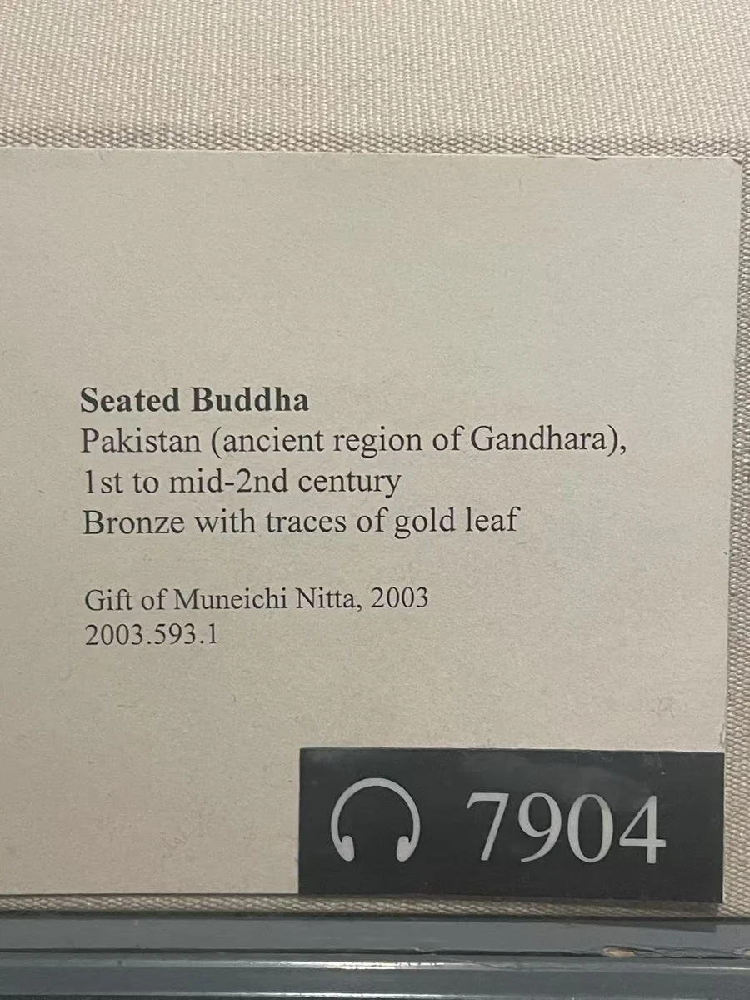

08 / 佛与菩萨的形象
小青铜佛与放射的头光
十六厘米的身体，和向外放射的头光。

把照片放大，很容易忘记这尊青铜佛只有16.8厘米高。双腿交叠在座上，右手抬起，左手整理衣边；身后头光向外伸出整齐的尖齿。圆形头光与较方整的座台，把小小身体框在中间。面容、衣褶和手指都需要靠近才能看清，但轮廓在远处已经十分明确。
大都会将它定为1世纪至2世纪中叶，并记录表面残存金层。残留的金色提示了它曾有的表面光泽。头光的外缘尤其适合与石雕比较：尖齿之间的空隙让背景透过，金属的轮廓因而显得轻巧；身体与座台仍维持紧凑的体量，手掌的抬起则给静坐的姿势增加一个清楚的回应。 [1]
这件小像与大型犍陀罗石佛分享若干手势和衣着表达，却有不同的观看距离。它的尺寸容许近看，也提示佛的形象可以以不止一种尺度存在。原来的供奉环境已不详。先把实物尺度记在心里，再回看放大的面孔，会更容易理解雕刻与铸造在细小空间里的取舍。
本篇作品
青铜佛坐像 · 2003.593.1
- 原题名
- Seated Buddha
- 年代
- 1世纪至2世纪中叶
- 材料
- 青铜，残存金层
- 尺寸
- 16.8 × 11.4 × 10.2厘米
- 编号
- 2003.593.1
- 收藏／展出
- 大都会艺术博物馆
- 地域关系
- 犍陀罗地区；具体原址未详
资料与来源
现场展签

